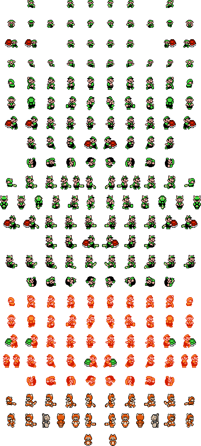

Exemplu CSS Sprites
Aceasta pagina demonstreaza cum functioneaza CSS Sprites. Meniul de navigare de sus foloseste deja un fisier sprite.svg cu 6 iconite puse la un loc, pe care le decupam folosind background-position.
Exemplu cu "Sprite Sheet"
O imagine de tip Sprite este o poza mare care contine in interiorul ei mai multe elemente sau cadre.
Incarcand o singura poza mare in loc de zeci de poze mici pentru fiecare cadru, ajutam site-ul sa se miste mai repede pentru ca facem o singura cerere catre server in loc de mai multe!

Decuparea din CSS (background-position)
Daca punem acea imagine ca background si tragem de coordonatele X si Y cu minus, putem scoate la iveala exact personajul de care avem nevoie, ascunzand restul pozei:
-366px -434px
-370px -234px
-331px -794px
-55px -155px
Codul CSS ca sa obtinem primul caracter din cutiile de mai sus arata in felul urmator:
.element-luigi {
display: inline-block;
width: 33px;
height: 28px;
background-image: url('luigi-sprite.png');
background-position: -366px -434px;
}